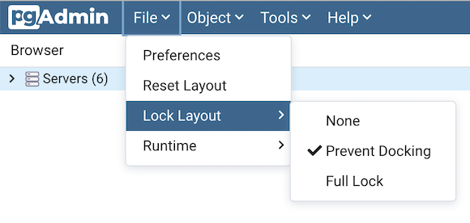
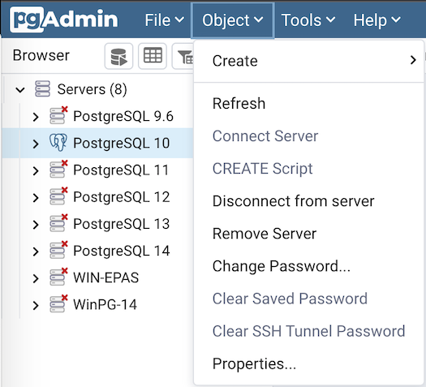
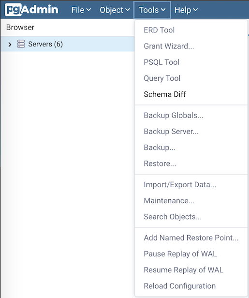
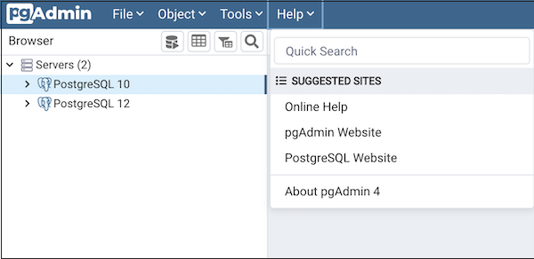

Menu Bar¶
The pgAdmin menu bar provides drop-down menus for access to options, commands, and utilities. The menu bar displays the following selections: File, Object, Tools*, and Help. Selections may be grayed out which indicates they are disabled for the object currently selected in the pgAdmin tree control.
The File Menu¶
Use the File menu to access the following options:
Option |
Action |
|---|---|
Preferences |
Click to open the Preferences dialog to customize your pgAdmin settings. |
Reset Layout |
If you have modified the workspace, click to restore the default layout. |
Lock Layout |
Click to open a submenu to select the level for locking the UI layout This can also be changed from browser display preferences |
Runtime |
Click to open a submenu to Configure, View Log and Zoom settings. Only visible when pgAdmin4 runs in desktop mode. To know more about runtime menu click here |
The Object Menu¶
The Object menu is context-sensitive. Use the Object menu to access the following options (in alphabetical order):
Option |
Action |
|---|---|
Change Password… |
Click to open the Change Password… dialog to change your password. |
Clear Saved Password |
If you have saved the database server password, click to clear the saved password. Enable only when password is already saved. |
Clear SSH Tunnel Password |
If you have saved the ssh tunnel password, click to clear the saved password. Enable only when password is already saved. |
Connect Server |
Click to open the Connect to Server dialog to establish a connection with a server. |
Create |
Click Create to access a context menu that provides context-sensitive selections. Your selection opens a Create dialog for creating a new object. |
Delete/Drop |
Click to delete the currently selected object from the server. |
Disconnect from server |
Click to disconnect from the currently selected server. |
Drop Cascade |
Click to delete the currently selected object and all dependent objects from the server. |
Properties… |
Click to review or modify the currently selected object’s properties. |
Refresh |
Click to refresh the currently selected object. |
Remove Server |
Click to remove the currently selected server. |
Scripts |
Click to open the Query tool to edit or view the selected script from the flyout menu. |
Trigger(s) |
Click to Disable or Enable trigger(s) for the currently selected table. Options are displayed on the flyout menu. |
Truncate |
Click to remove all rows from a table (Truncate), to remove all rows from a table and its child tables (Truncate Cascade) or to remove all rows from a table and automatically restart sequences owned by columns (Truncate Restart Identity). Options are displayed on the flyout menu. |
View Data |
Click to access a context menu that provides several options for viewing data (see below). |
ERD For Database |
Click to open the ERD tool with automatically generated diagram for the database selected. This option is available only when a database is selected. Options are displayed on the flyout menu. |
ERD For Table |
Click to open the ERD tool with automatically generated diagram for the table selected. This option is available only when a table is selected. Options are displayed on the flyout menu. |
The Tools Menu¶
Use the Tools menu to access the following options (in alphabetical order):
Option |
Action |
|---|---|
ERD Tool |
Click to open the ERD Tool and start designing your database. |
Grant Wizard… |
Click to access the Grant Wizard tool. |
PSQL Tool |
Click to open the PSQL Tool and start PSQL in the current database context. |
Query tool |
Click to open the Query tool for the currently selected object. |
Schema Diff |
Click to open the Schema Diff and start comparing two database or two schema. |
Backup Globals… |
Click to open the Backup Globals… dialog to backup cluster objects. |
Backup Server… |
Click to open the Backup Server… dialog to backup a server. |
Backup… |
Click to open the Backup… dialog to backup database objects. |
Restore… |
Click to access the Restore dialog to restore database files from a backup. |
Import/Export Data… |
Click to open the Import/Export data… dialog to import or export data from a table. |
Maintenance… |
Click to open the Maintenance… dialog to VACUUM, ANALYZE, REINDEX, or CLUSTER. |
Search Objects… |
Click to open the Search Objects… and start searching any kind of objects in a database. |
Add named restore point |
Click to open the Add named restore point… dialog to take a point-in-time snapshot of the current server state. |
Pause replay of WAL |
Click to pause the replay of the WAL log. |
Resume replay of WAL |
Click to resume the replay of the WAL log. |
Reload Configuration… |
Click to update configuration files without restarting the server. |
Storage Manager |
Click to open the Storage Manager to upload, delete, or download the backup files. |
The Help Menu¶
Use the options on the Help menu to access online help documents, or to review information about the pgAdmin installation (in alphabetical order):
Option |
Action |
|---|---|
Quick Search |
Type your keywords in the Quick Search field. Typing at least three characters will display all the matching possibilities under Menu items and the relevant documents under Help articles. Click on the options under Menu items to perform action of particular functionality or object. Click on any of the Help articles to open the help of that topic with highlighted text in a separate window. Note:- If any of the option under Menu items is disabled, then it will provide information via info icon. |
About pgAdmin 4 |
Click to open a window where you will find information about pgAdmin; this includes the current version and the current user. |
Online Help |
Click to open documentation support for using pgAdmin utilities, tools and dialogs. Navigate (in the newly opened tab?) help documents in the left browser pane or use the search bar to specify a topic. |
pgAdmin Website |
Click to open the pgAdmin.org website in a browser window. |
PostgreSQL Website |
Click to access the PostgreSQL core documentation hosted at the PostgreSQL site. The site also offers guides, tutorials, and resources. |